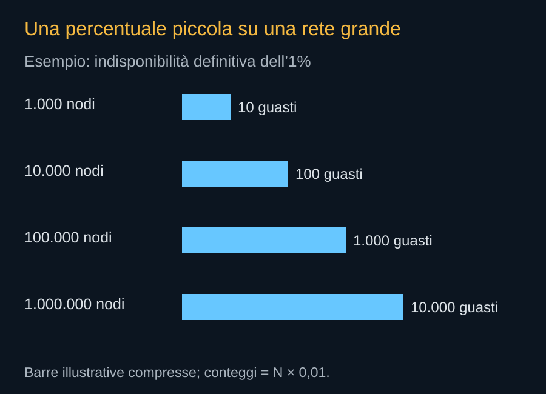

Un milione non è soltanto un numero più grande. Cambia il modo di valutare eventi rari, strumenti operativi e responsabilità. Una probabilità piccola sul singolo satellite può produrre molti casi nella flotta. Se gli eventi condividono una causa, il rischio può crescere in un modo che una semplice percentuale media non mostra.
Contare le conseguenze
In un esempio puramente aritmetico, una probabilità dell’1% di fallimento definitivo su un milione di unità implica un valore atteso di 10.000 casi. Non sono necessariamente 10.000 collisioni: il tipo di guasto e la possibilità di rientro cambiano la conseguenza. Il conto mostra perché “99% di successo” possa essere insufficiente come descrizione della sostenibilità complessiva.


Per eventi indipendenti con probabilità p, la probabilità di almeno un caso su N unità è 1 − (1 − p)N. L’indipendenza è un’ipotesi, non una proprietà garantita della flotta. Errori comuni di software, componenti dello stesso lotto e condizioni ambientali possono collegare i guasti. L’analisi deve considerare il sistema, oltre alla macchina media.
Grandi superfici e incontri
Un veicolo con pannelli molto estesi presenta geometrie che cambiano con l’assetto. La sezione rilevante per una collisione non coincide sempre con la superficie usata per raccogliere energia. Occorre modellare il satellite integro, quello con appendici danneggiate e quello senza controllo. Anche la precisione della posizione e delle previsioni entra nel calcolo.
La risposta SpaceX di settembre riporta analisi per gusci di esempio e afferma che i risultati restino entro il criterio per singolo satellite considerato. È una dichiarazione del richiedente basata sui propri modelli. Non è una misurazione della flotta futura né risolve da sola gli effetti cumulativi della crescita.
Condividere informazioni utilizzabili
Le effemeridi indicano dove si prevede che il satellite si trovi. La covarianza descrive l’incertezza della previsione. Condividere entrambe permette agli altri operatori di valutare incontri e manovre con una base più utile di un punto geometrico privo di errore. Anche i piani di manovra devono essere comunicati in tempi appropriati.
Una rete automatizzata non può decidere in isolamento quando l’altro oggetto sia controllato da un operatore diverso. Servono regole, scambio di dati e gestione delle situazioni nelle quali entrambi potrebbero manovrare. L’automazione aumenta la capacità di reagire; il coordinamento evita che reazioni locali si ostacolino.
Il fine vita del satellite guasto
SpaceX propone dismissione propulsiva e rientri mirati. Per i gusci di esempio più bassi discute anche il decadimento passivo e le conseguenze di una perdita di controllo. Un piano valido deve preservare energia, propulsione e collegamenti per l’uscita. Deve anche descrivere ciò che accade quando queste funzioni non sono più disponibili.
Un modello che restituisce rischio di vittime pari a zero secondo una soglia energetica non afferma che nessun materiale raggiunga il terreno e non descrive la chimica atmosferica. Nella risposta SpaceX alcuni componenti sono indicati con energia prevista inferiore a 15 joule, altri con completa distruzione prevista. Sono categorie del modello, da mantenere distinte da un’assenza universale di conseguenze.
Una crescita verificabile
Secure World Foundation propone esame dei rischi cumulativi e crescita per fasi, legata a dati e trasparenza. È una posizione nell’istruttoria. Il rapporto ESA del 2026 documenta invece l’ambiente già esistente, con riferimento ai dati fino alla fine del 2025. Nessuno dei due deve essere trasformato nel conteggio di satelliti Starmind già presenti.
La capacità di operare in sicurezza dovrà accompagnare la capacità di produrre. Un’espansione misurata per risultati di dismissione, anomalie e coordinamento può mantenere leggibile il sistema. La promessa di un milione di nodi richiede questa verifica prima che il numero diventi il principale criterio di successo.
Fonti pubbliche e tracce
- SpaceX, risposta alla FCC datata 16 settembre 2026. Documento primario scaricato e letto. Incontro del 14 settembre; inviluppi a pagina 8, rientro a pagina 9. Dichiarazioni e modelli del richiedente, non decisione della FCC.
- Secure World Foundation, commenti alla domanda SpaceX. 6 marzo 2026. Posizione del partecipante all’istruttoria su rischi cumulativi, trasparenza e autorizzazioni per fasi, non decisione FCC.
- ESA, Space Environment Report 2026. Pubblicazione del 14 settembre 2026, quadro basato sui dati fino a fine 2025. Le proposte future non sono satelliti già presenti.
- FCC, DA 26-113: domanda accettata per l’istruttoria. 4 febbraio 2026. Deposito del 30 gennaio, fino a un milione di satelliti, 500–2.000 km. Accettazione procedurale, non autorizzazione.